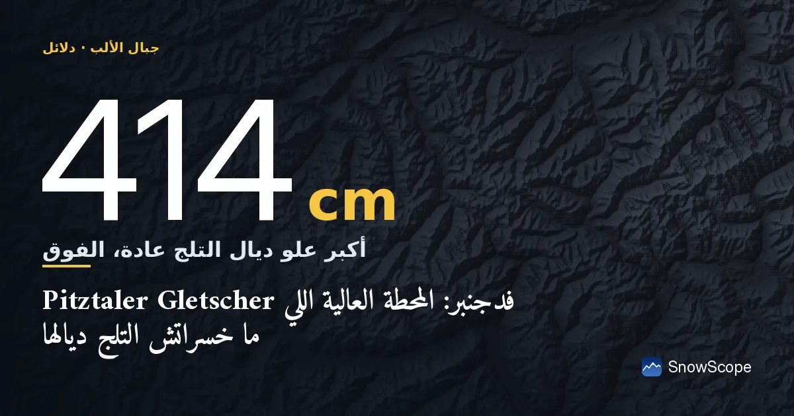

Pitztaler Gletscher فدجنبر: المحطة العالية اللي ما خسراتش التلج ديالها
Pitztaler Gletscher كـايـرجـع عـلـى الـمـدّة. بـينـما بـزّاف ديـال المـحـطـات ديـال الـألـب كـايـضـهـرو تـقـليـل فـ عـلـو التـلـج فـ دجـنـبـر عـلـى الـعـقـود الـأخـيـرة، هـاد الـثـلـج فـ تـيـرول كـايـحـافـظ أو كـايـحـسّـن: نـص الـجـبـل دار 77 سم مـتـوسـط فـ الـثـمـانـينـات والـتـسـعـينـات لـ 85 سم فـ الـ15 شـتـوة الـأخـيـرة. هـاد الـاسـتـقـرار كـايـخـلـي دجـنـبـر هـنـا رهـان نـادر يـسـتـاهـل.
شوف توقعات التلج مباشرة ديال Pitztaler Gletscher فالتطبيق ديال SnowScopeالعلو ديال التلج، التنبيهات والخريطة 3D، فابور.
شـنـو الـتـضـاريـس ديـال الـثـلـج كـاع تـاع لـيـك
الـارتـفـاع والـجـلـيـد كـايـهـمّـو. الـقـمـة ديـال Pitztaler Gletscher كـاينـة فـ 3424 م، بـشـكـل فـوق خـط الـشـتـا ديـال دجـنـبـر. فـ هـاد الـارتـفـاع كـل شـتـوة وحـدة فـ الـ46 سـنـة ديـالـنـا كـانـت فـيـهـا 30 سم أو أكـثـر فـ نـص دجـنـبـر، و100% كـانـو عـنـدهـم أقـل شـي 60 سم بـ حـدا دجـنـبـر. محـطـة الـقـيـاس ديـال نـص الـجـبـل فـ 2576 م كـايـضـهـر نـفـس الـسـجـل الـكـامـل: ماشـي شـتـوة وحـدة نـزلـت تـحـت 30 سم فـ الـأسـبـوع ديـال 15–21 دجـنـبـر.
فـ يـوم عـادي 15 دجـنـبـر محـطـة نـص الـجـبـل كـاينـة 87 سم والـقـمـة 171 سم. بـ حـدا دجـنـبـر محـطـة نـص الـجـبـل كـاينـة حـوالـي 92 سم. فـ 85% ديـال الـشـتـوات، هـاد الـارتـفـاع الـوسـط كـان فـيـهـا 60 سم أو أكـثـر بـ حـدا دجـنـبـر–الـمـنـطـقـة ديـال التـلـج الـعـمـيـق، ماشـي مـنـطـقـة الـحـك.


الـقـاع: حـكـايـة أخـرى
محـطـة الـوادي فـ 1728 م كـايـحـكـي حـكـايـة بـخـرى. فـ يـوم عـادي 15 دجـنـبـر عـنـدهـا 32 سم–فـوق الـحـد ديـال 30 سم، بـس غـيـر شـوية. غـيـر 59% ديـال الـشـتـوات كـايـوصـلـو لـ 30 سم فـ الـأسـبـوع ديـال قـبـل حـدا دجـنـبـر هـنـاك، والـيـوم الـأول الـعـادي لـ تـلـقـاو 30 سم فـ الـأرض هـو 10 دجـنـبـر.
هـاد كـايـهـمّ لـ الـعـائـلات أو الـمـزلـاجـين الـلـي بـغـاو يـحـمـاو نـفـسـهـم فـ ارتـفـاع أقـل. الـخـطـة هـنـا هـي تـركـب بـ الـمـصـعـد بـ بـاكـرة واحـد وتـنـزلـو مـن نـص الـجـبـل أو الـقـمـة، بـعـدا تـنـزلـو بـ الـمـصـعـد. الـحـجـر كـايـضـهـر فـ الـقـاع فـ بـاكـرة دجـنـبـر. الـشـتـوة الـلـي فـاتـت (2025–26) هـاد مـثـال: فـ 15 دجـنـبـر كـانـو غـيـر 16 سم فـ الـقـاع، وعـنـد نـص الـجـبـل كـانـو 50 سم.
دجـنـبـر هـاد الـشـتـوة ضـد الـشـتـوات الـلـي فـاتـو
الـاتـجـاه الـطـويـل الـمـدى كـايـخـدمـك. الـنـقـاش الـقـديـم عـلـى واش دجـنـبـر كـايـصـيـر أكـثـر ثـلـج أو أرقـع ماشـي كـايـنـطـبـق هـنـا. فـ الـقـمـة، متـوسـط دجـنـبـر طـلـع مـن 142 سم فـ الـ15 شـتـوة الـأولـى لـ 174 سم فـ الـ15 شـتـوة الـأخـيـرة. حـتـى الـقـاع تـحـسّـن: مـن 31 سم لـ 35 سم. هـاد زاويـة ديـال الـألـب الـلـي الأرض الـثـلـج الـعـالـيـة كـايـحـولـو رطـوبـة الـشـتـا لـ تـلـج، ماشـي شـتـا.
فـ أسـبـوع حـدا دجـنـبـر كـل الـ15 شـتـوة الـأخـيـرة كـانـت عـنـدهـا 30 سم أو أكـثـر فـ نـص الـجـبـل. النـسـبـة ديـال 30 سم فـ الـقـاع طـلـعـت مـن 60% لـ 67%. هـاد ماشـي ضـمـانـة–ماشـي سـيـزون وحـد–بـس هـاد أقـرب شـي لـ دجـنـبـر فـ الـألـب.
الـثـمـن والـتـذاكـر
الـمـوسـم 2026-27 كـايـستـعـمـل السـعـر الـواحـد: 77 يـورو لـ تـذكـرة يـوم واحـد لـ شـخـص كـبـيـر، 410 يـورو لـ 6 أيـام. ماشـي خـصـم قـبـل حـدا دجـنـبـر، فـ دجـنـبـر ماشـي أرخـص مـن يـنـايـر أو فـبـرايـر. الـفـرق هـو مـوثـوقـيـة التـلـج، ماشـي السـعـر.
واحـد الـحـاجـة الـزويـنـة الـلـي تـستـاهـل: تـذكـرة 2 يـوم أو أكـثـر فـيـهـا يـوم واحـد فـ Kaunertal Glacier أو Winterberg Fendels أو Hochzeiger بـ لا شـي إضـافـي. مـنـطـقـة Rifflsee، مـشـغـولـة بـ وحـدهـا، كـايـفـتـحـو فـ 12 دجـنـبـر 2026 إذا بـغـيـت مـنـطـقـة ثـانـيـة رخـيـصـة قـريـبـة.
شـنـو الـفـرق: Stubai Glacier الـقـريـب
Stubaier Gletscher، الـوادي الـثـاني فـ الـشـرق، عـنـدو التـلـج ديـال نـص الـجـبـل فـ دجـنـبـر تـقـريـبـا نـفـسـو: 86 سم فـ يـوم عـادي 15 دجـنـبـر و100% ديـال الـشـتـوات عـنـدهـم 30 سم فـ الـأسـبـوع قـبـل حـدا دجـنـبـر. الـقـاع ديـالـو أعـمـق شـوية بـ 40 سم. Stubai كـاع كـايـعـطـيـو تـذكـرة 6 أيـام بـ 355 يـورو–حـوالـي 55 يـورو أقـل مـن Pitztal.
الـحـاجـة الـزويـنـة ديـال Pitztal هـي الـارتـفـاع. فـ 3424 م الـقـمـة ديـالـو أعـلـى بـ 216 م مـن Stubai الـلـي فـ 3208 م، الـشـي الـلـي كـايـخـلـيـك تـحـت الـخـط ديـال الـطـقـس أكـثـر وموسـم أطـول لـ الـربـيـع. إذا الـمـجـمـوعـة ديـالـك مـرتـاحـة فـ الـبـيـسـت ديـال نـص الـجـبـل، Stubai عـطـاه نـفـس التـلـج بـ أقـل. إذا بـغـيـت أقـصـى ارتـفـاع والـيـوم الـإضـافـي فـ الأثـلـج الـأخـرى، Pitztal يـسـتـاهـل الـتـمـن.
واش تـحـجـز فـ دجـنـبـر
بـاكـرة دجـنـبـر (1–7 دجـنـبـر) هـي فـرصـة 37% فـ الـقـاع و100% فـ الـقـمـة–رحـلـة صـعـود وتـنـزيـل. نـص دجـنـبـر (8–14 دجـنـبـر) أحـسـن: 50% ديـال الـشـتـوات كـايـوصـلـو 30 سم فـ الـقـاع فـ هـاد الـوقـت. الـأسـبـوع 15–21 دجـنـبـر هـو الـمـنـطـقـة: 59% فـ الـقـاع، 100% فـ نـص الـجـبـل والـقـمـة. أسـبـوع حـدا دجـنـبـر هـو أحـسـن فـرصـة: 67% ديـال الـشـتـوات عـنـدهـم 30 سم فـ الـقـاع والـتـلـج شـبـه مـضـمـون مـن نـص الـجـبـل فـ الـعـالـي.
الـشـتـوة الـلـي فـاتـت (2025–26) هـي تـحـذيـر: حـتـى سـيـزون ضـعـيـفـة خـلـقـت 16 سم فـ الـقـاع فـ 15 دجـنـبـر و50 سم فـ نـص الـجـبـل. رقـيـق، بـس ماشـي فـارغ. إذا كـاع تـحـتـاج تـجـي بـاكـرة دجـنـبـر وماشـي قـادر تـبـدّل الـخـطـة، قـول الـمـحـطـة عـلـى الـثـلـج الـاصـطـنـاعـي فـ الـبـيـسـت الـتـحـت.
نصايح للي كيتزلجو
- حـجـز تـذكـرة 2 يـوم أو أكـثـر: الـتـذكـرة فـيـهـا يـوم فـابـور واحـد فـ Kaunertal Glacier أو Winterberg Fendels أو Hochzeiger. استـعـملـو لـ تـحـمـي نـفـسـك ضـد يـوم واحـد التـلـج فـيـهـو ضـعـيـف.
- زلج مـن نـص الـجـبـل (2576 م) أو الـقـمـة (3424 م) فـ بـاكـرة دجـنـبـر وتـنـزلـو بـ الـمـصـعـد؛ الـقـاع كـايـمـكـن يـكـون فـيـهـو تـلـج رقـيـق أو حـجـر لـ نـص الـشـهـر.
- دجـنـبـر عـلـى الـثـلـج كـايـعـطـيـك بـرد: فـ 3424 م توقـع بـرد بـشـكـل بـاقـع تـحـت التـجـميـد. عـاد الـمـدفـيـات، الـحـمـايـة ديـال الـوجـه والـنـظـارات الـمـنـاسـبـة لـلـضـوء الـفـلـات والـريـح.
- إذا بـغـيـت تـضـاريـس بـلا مـسـار أو تـزلـج فـ الـجـبـل، شـوف نـشـرة الـانـهـيـارات ديـال Avalanche.report – Euregio Tyrol قـبـل مـا تـروح، واسـتـأجـر مـرشـد مـن هـنـا. الـشـقـوق فـ الـثـلـج كـايـهـدّدـو طـول السـنـة.
- إذا ثـمـن Pitztal شـي غـالـي لـيـك والـمـجـمـوعـة ديـالـك مـرتـاحـة فـ نـص الـجـبـل، قـارن Stubaier Gletscher: نـفـس عـلـو التـلـج ديـال دجـنـبـر فـ نـص الـارتـفـاع بـ حـوالـي 55 يـورو أقـل لـ كـل تـذكـرة 6 أيـام.
على هاد الأرقام
العلو ديال التلج فالمحطات هو أكثر تلج فالجهة الفوقانية فالتاريخ المكتوب؛ هادو تقديرات لمنطقة، ماشي قياس فنقطة وحدة. التوقعات يمكن تتبدل. ديما شوف النشرة الرسمية ديال الانهيارات قبل ما تخرج من البيست.
النشرات الرسمية ديال الانهيارات: Avalanche.report – Euregio Tyrol
كيفاش تستاشهد بهاد المقال
للبحث، التعليم ولا الصحافة: الأرقام والرسومات تقدر تعاود تخدم بيهم بحرية تحت CC BY 4.0 مع هاد الاستشهاد.
SnowScope (2026), Pitztaler Gletscher فدجنبر: المحطة العالية اللي ما خسراتش التلج ديالها, https://snowscope.app/blog/ar/2026/11/pitztal-glacier-december-ski-snow-sure-price.html, تشاف ف 2026-11-14
SnowScope (Atlas Labs). (2026, November 14). Pitztaler Gletscher فدجنبر: المحطة العالية اللي ما خسراتش التلج ديالها. SnowScope snow reports. https://snowscope.app/blog/ar/2026/11/pitztal-glacier-december-ski-snow-sure-price.html
BibTeX
@misc{snowscope2026pitztalglacierdecembersk,
author = {{SnowScope (Atlas Labs)}},
title = {Pitztaler Gletscher فدجنبر: المحطة العالية اللي ما خسراتش التلج ديالها},
year = {2026},
month = nov,
howpublished = {\url{https://snowscope.app/blog/ar/2026/11/pitztal-glacier-december-ski-snow-sure-price.html}},
note = {Published 2026-11-14 14:54 UTC; accessed 2026-11-14}
}· CC BY 4.0 · الطريقة، الداتا والأدوات →
Pitztaler Gletscher: التلج والحرارة حسب العلو، هاد الشتا مقارنة مع اللي فاتت (الأدوات) →
تابع Pitztaler Gletscher
فابور: ميساج ملي يجي التلج، والتوقعات كل صباح.